# Join cell type and treatment from Seurat metadatameta_lookup <-bind_rows( slide1@meta.data |>as_tibble(rownames ="cell") |>select(cell, annotatedclusters, Treatment.Group), slide2@meta.data |>as_tibble(rownames ="cell") |>select(cell, annotatedclusters, Treatment.Group))# Pool distances and join metadatacell_distances_all <-bind_rows( cell_distances_1 |>mutate(slide =1L), cell_distances_2 |>mutate(slide =2L)) |>left_join(meta_lookup, by ="cell")# Reshape to long format: one row per cell per plaque typeridge_df <- cell_distances_all |>pivot_longer(cols =c(dist_caa, dist_paren),names_to ="plaque_type", values_to ="distance") |>mutate(plaque_type =recode(plaque_type, dist_caa ="CAA", dist_paren ="Parenchymal"),distance_cap =pmin(distance, 500) )# Cell counts per cell typecell_distances_all |>count(annotatedclusters, Treatment.Group, name ="n_cells") |>pivot_wider(names_from = Treatment.Group, values_from = n_cells, values_fill =0) |>mutate(total = Adu + IgG) |>arrange(desc(total)) |>kbl(caption ="Cell counts per annotated cluster and treatment") |>kable_styling("striped", full_width =FALSE)
Cell counts per annotated cluster and treatment
annotatedclusters
Adu
IgG
total
Oligodendrocyte
37189
33135
70324
Astrocyte
24115
24374
48489
Glutamatergic Neuron 1
20404
19017
39421
Microglia
18359
16440
34799
Glutamatergic Neuron 2
15773
18562
34335
Endothelial
12658
12925
25583
GABAergic Neuron 1
9162
12013
21175
GABAergic Neuron 2
7531
7495
15026
NA
5170
6301
11471
OPC
5246
4632
9878
Glutamatergic Neuron 3
3830
3653
7483
Fibroblast
2583
3596
6179
Pericyte
3062
2865
5927
GABAergic Neuron 3
2427
2647
5074
Glutamatergic Neuron 4
2086
2069
4155
CP
2404
1725
4129
GABAergic Neuron 4
2117
1974
4091
Ependymal
2041
1563
3604
VSMC
1179
1357
2536
Glutamatergic Neuron 5
1038
956
1994
BAM
717
760
1477
VLMC
241
417
658
T Cell
354
237
591
Ridge plots — all cell types
Distance distributions for each cell type to the nearest CAA and parenchymal plaque, split by treatment group. Distances capped at 500 um for visualisation. The dashed line marks the 50 um proximity threshold.
Code
# Drop cells without annotation, then order by median distance to parenchymal plaquesridge_df <- ridge_df |>filter(!is.na(annotatedclusters))ct_order <- cell_distances_all |>filter(!is.na(annotatedclusters)) |>group_by(annotatedclusters) |>summarise(med_dist =median(dist_paren), .groups ="drop") |>arrange(med_dist) |>pull(annotatedclusters)ridge_df <- ridge_df |>mutate(annotatedclusters =factor(annotatedclusters, levels = ct_order))ggplot(ridge_df, aes(x = distance_cap, y = annotatedclusters, fill = Treatment.Group)) +geom_density_ridges(alpha =0.5, scale =1.2, rel_min_height =0.01) +geom_vline(xintercept =50, linetype ="dashed", colour ="grey30") +facet_wrap(~ plaque_type) +scale_fill_manual(values =c("IgG"="#4DAF4A", "Adu"="#E41A1C")) +labs(x ="Distance to nearest plaque (um, capped at 500)",y =NULL,fill ="Treatment" ) +theme_minimal(base_size =13) +theme(legend.position ="bottom",panel.grid.major.x =element_blank(),panel.grid.minor.x =element_blank(),strip.text =element_text(size =14, face ="bold") )
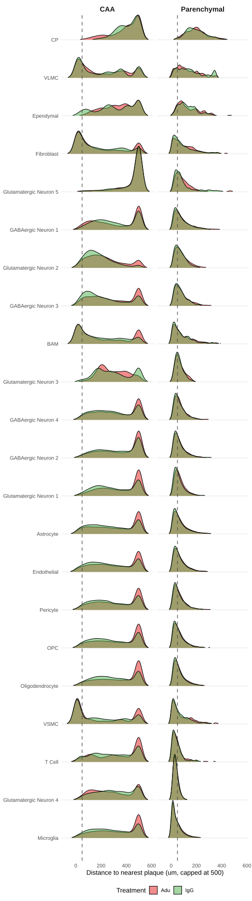
Distance from each cell to its nearest plaque, stratified by annotated cell type and treatment. Faceted by plaque type (CAA vs Parenchymal).
Code
# Individual ridge plots per cell type for closer inspectionwalk(ct_order, \(ct) { sub_df <- ridge_df |>filter(annotatedclusters == ct)if (nrow(sub_df) ==0) return(invisible(NULL))cat(sprintf("\n## %s\n\n", ct)) p <- sub_df |>ggplot(aes(x = distance_cap, y = Treatment.Group, fill = Treatment.Group)) +geom_density_ridges(alpha =0.6, scale =1.2, rel_min_height =0.01) +geom_vline(xintercept =50, linetype ="dashed", colour ="grey30") +facet_wrap(~ plaque_type) +scale_fill_manual(values =c("IgG"="#4DAF4A", "Adu"="#E41A1C")) +labs(title = ct,x ="Distance to nearest plaque (um, capped at 500)",y =NULL,fill ="Treatment" ) +theme_minimal(base_size =15) +theme(legend.position ="bottom",panel.grid =element_blank())print(p)cat("\n\n")})
Microglia
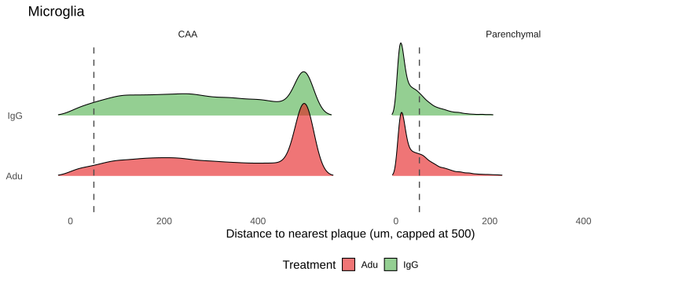
Per-cell-type ridge plots of distance to nearest plaque by treatment.
Glutamatergic Neuron 4
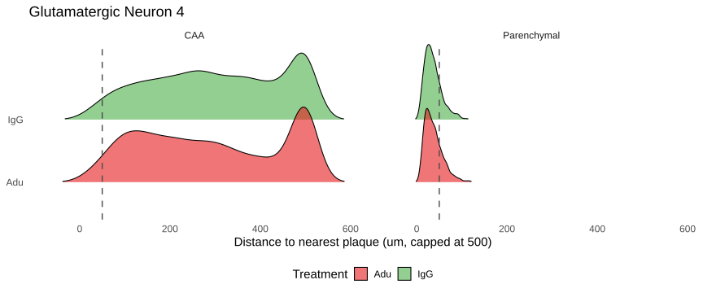
Per-cell-type ridge plots of distance to nearest plaque by treatment.
T Cell
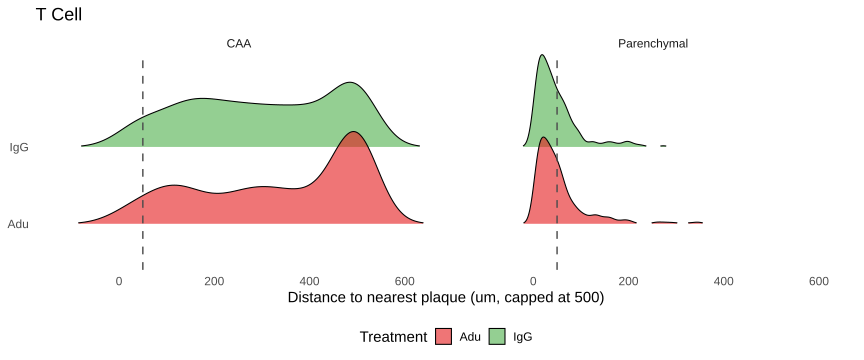
Per-cell-type ridge plots of distance to nearest plaque by treatment.
VSMC
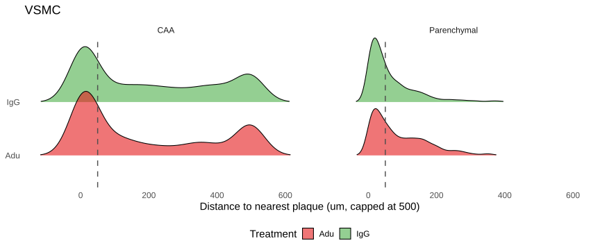
Per-cell-type ridge plots of distance to nearest plaque by treatment.
Oligodendrocyte
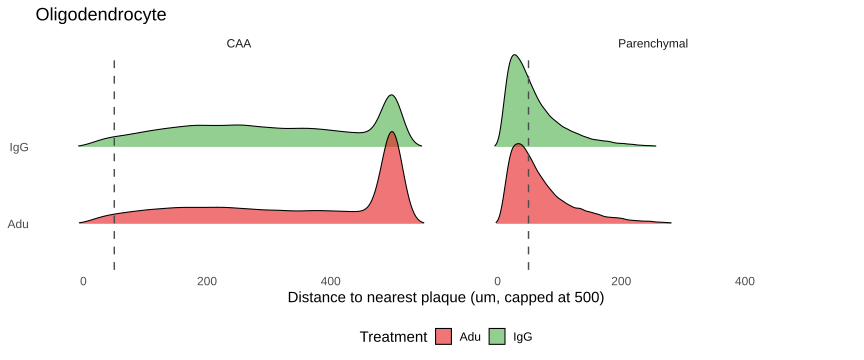
Per-cell-type ridge plots of distance to nearest plaque by treatment.
OPC
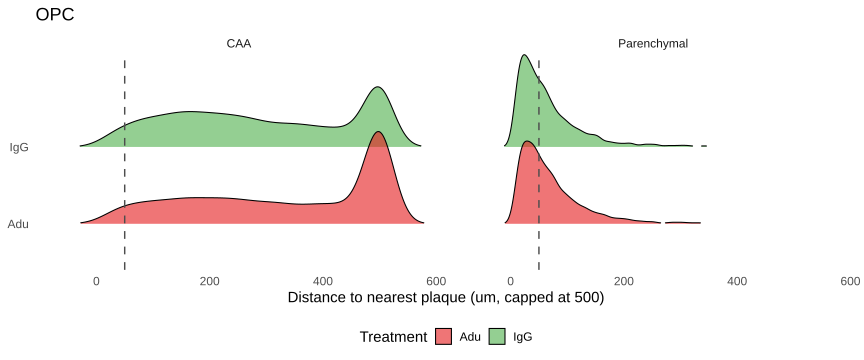
Per-cell-type ridge plots of distance to nearest plaque by treatment.
Pericyte
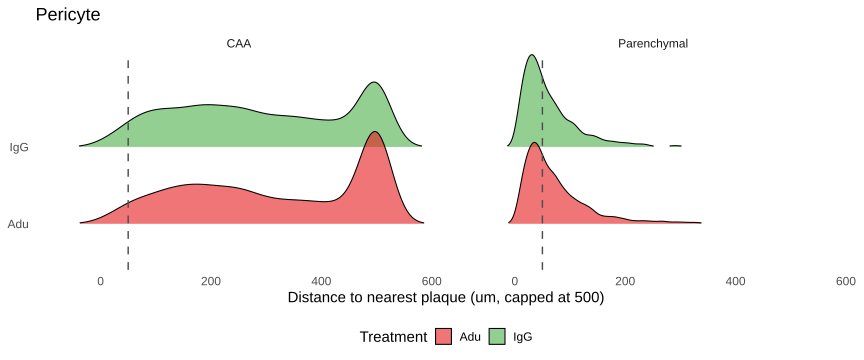
Per-cell-type ridge plots of distance to nearest plaque by treatment.
Endothelial
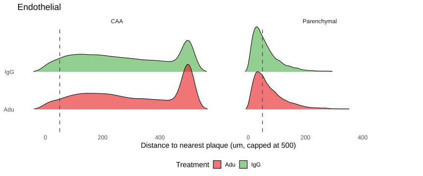
Per-cell-type ridge plots of distance to nearest plaque by treatment.
Astrocyte
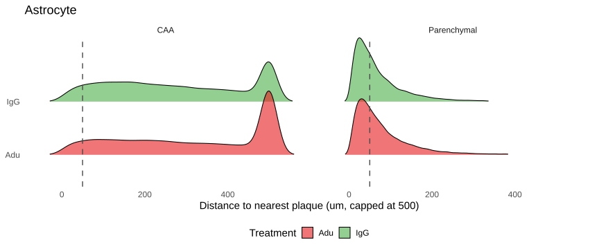
Per-cell-type ridge plots of distance to nearest plaque by treatment.
Glutamatergic Neuron 1
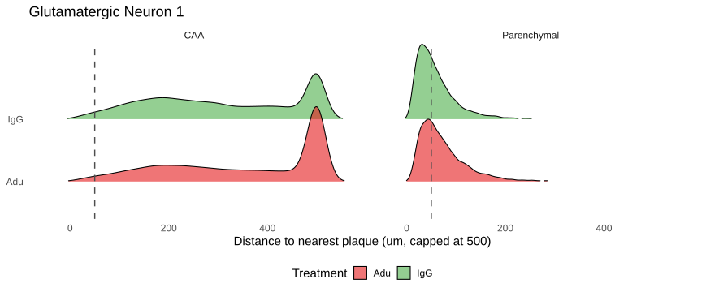
Per-cell-type ridge plots of distance to nearest plaque by treatment.
GABAergic Neuron 2
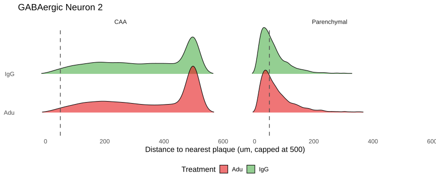
Per-cell-type ridge plots of distance to nearest plaque by treatment.
GABAergic Neuron 4
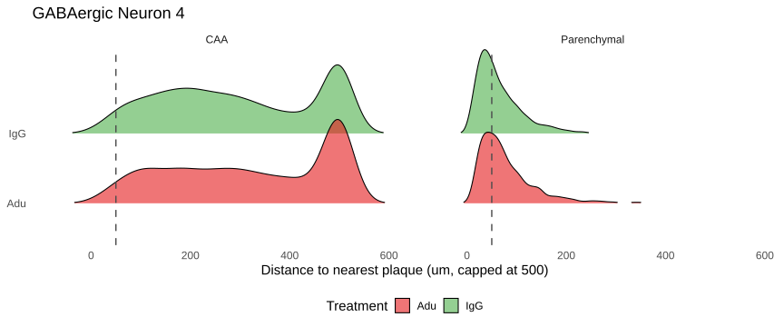
Per-cell-type ridge plots of distance to nearest plaque by treatment.
Glutamatergic Neuron 3
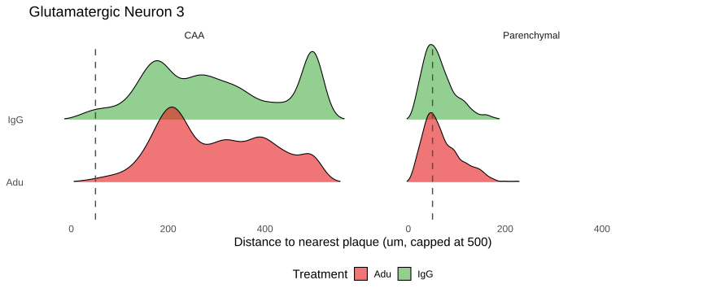
Per-cell-type ridge plots of distance to nearest plaque by treatment.
BAM
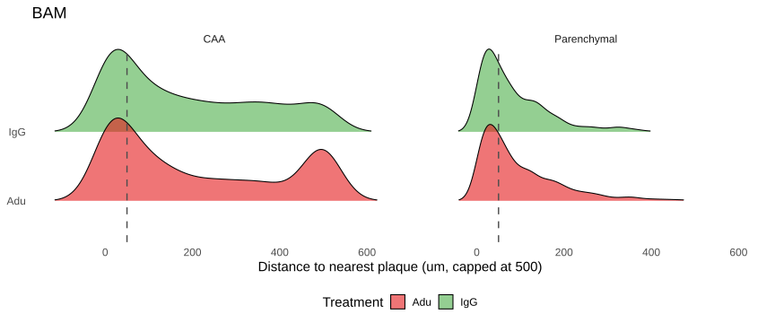
Per-cell-type ridge plots of distance to nearest plaque by treatment.
GABAergic Neuron 3
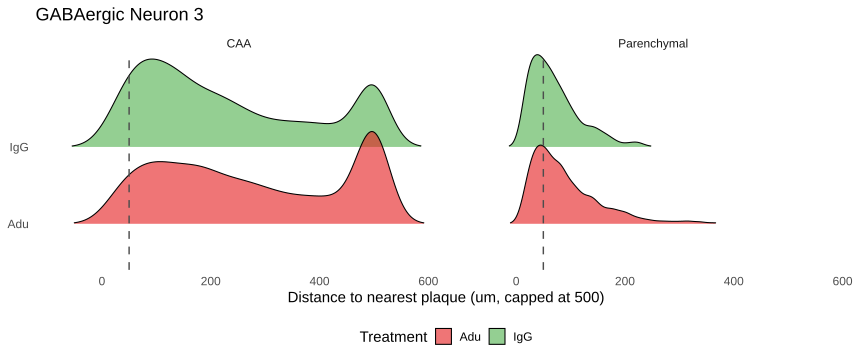
Per-cell-type ridge plots of distance to nearest plaque by treatment.
Glutamatergic Neuron 2
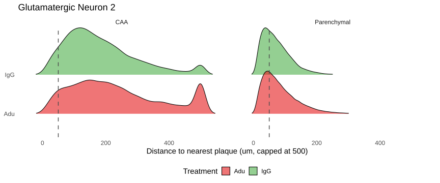
Per-cell-type ridge plots of distance to nearest plaque by treatment.
GABAergic Neuron 1
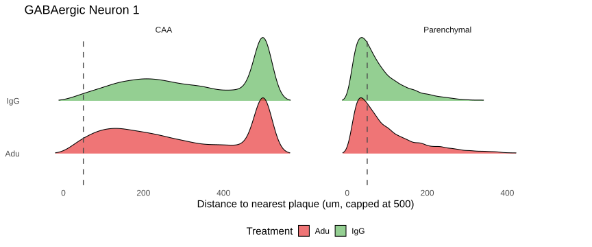
Per-cell-type ridge plots of distance to nearest plaque by treatment.
Glutamatergic Neuron 5
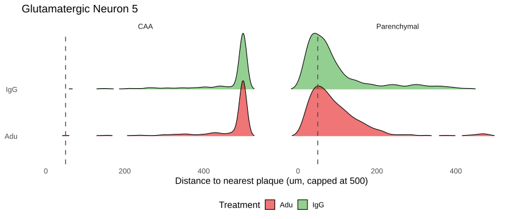
Per-cell-type ridge plots of distance to nearest plaque by treatment.
Fibroblast
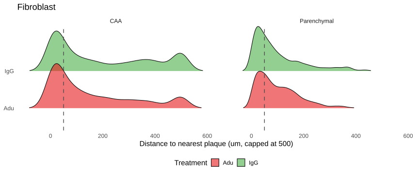
Per-cell-type ridge plots of distance to nearest plaque by treatment.
Ependymal
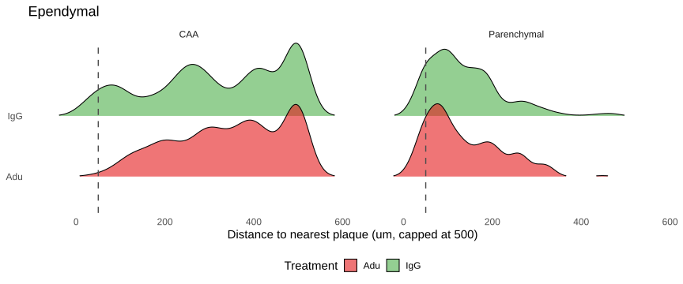
Per-cell-type ridge plots of distance to nearest plaque by treatment.
VLMC
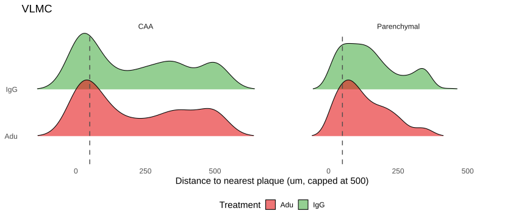
Per-cell-type ridge plots of distance to nearest plaque by treatment.
CP
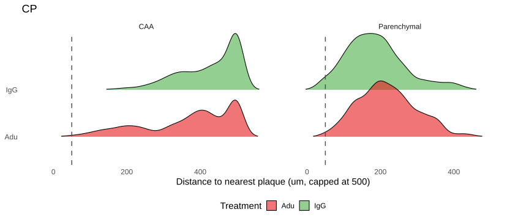
Per-cell-type ridge plots of distance to nearest plaque by treatment.